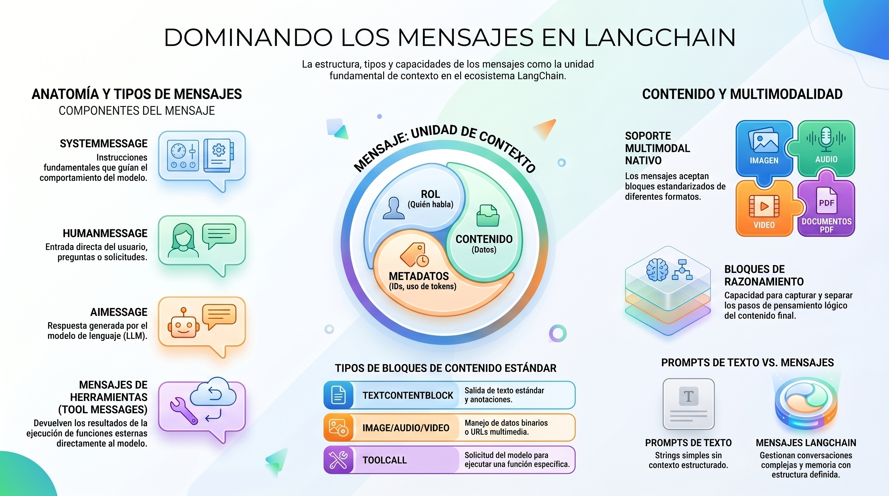

5. Introducción: De “Prompts” a la Orquestación de Mensajes Orientada a Objetos#
En la vanguardia del desarrollo de IA generativa, estamos presenciando un cambio de paradigma: la transición del “String-based Prompting” (basado en cadenas) a la Orquestación de Mensajes Orientada a Objetos. En LangChain, los mensajes no son meros contenedores de texto; son la unidad fundamental de contexto y el tejido conectivo que mantiene el estado en arquitecturas complejas, desde flujos lineales hasta grafos de agentes sofisticados mediante LangGraph.
Para un Arquitecto de Soluciones, dominar la clase Messages es un imperativo estratégico. Esta abstracción permite que nuestras aplicaciones operen bajo el Model Context Protocol (MCP), asegurando que la lógica de negocio permanezca desacoplada del proveedor del modelo (OpenAI, Anthropic, Bedrock). Un mensaje se define por tres componentes críticos:
Rol: La identidad del emisor (system, user, assistant, tool).
Contenido: Una carga útil versátil (texto, imágenes, audio o bloques estructurados).
Metadatos: Información de respuesta, IDs y métricas de consumo.
Perspectiva Arquitectónica: La estandarización de mensajes en LangChain no es solo una conveniencia técnica; es una salvaguarda para la interoperabilidad. Al adoptar este esquema, garantizamos que nuestro sistema pueda escalar y pivotar entre modelos sin reescribir la gestión de la memoria, permitiendo una evolución tecnológica sin fricciones.

5.1. Anatomía de un Mensaje: Estructura y Atributos Críticos#
Desde una visión de ingeniería, el contenido de un mensaje es solo la “punta del iceberg”. Para que un sistema sea resiliente en producción, debemos gestionar atributos que permitan la observabilidad y el control granular.
Los atributos esenciales de un mensaje incluyen:
Role: Define la jerarquía y el propósito del emisor en la conversación.
Content: Soporta tanto string como una lista de diccionarios (dict[]). El uso de listas de bloques proporciona una interfaz con seguridad de tipos para entradas complejas.
Usage_metadata: Contiene el recuento de tokens (input, output, total). Vital para el control de costes y dashboards de consumo.
Response_metadata: Atributo fundamental para arquitectos, ya que almacena datos específicos del proveedor que no entran en el estándar (como logprobs, finish_reason o flags de seguridad).
Inicialización con Bloques de Contenido (Type-Safe)
from langchain_core.messages import AIMessage
mensaje_ai = AIMessage(
content=[
{"type": "text", "text": "El análisis predictivo indica una tendencia alcista."}
],
id="arch_msg_99",
response_metadata={
"finish_reason": "stop",
"model_name": "gpt-4o",
"system_fingerprint": "fp_447af96"
},
usage_metadata={
"input_tokens": 45,
"output_tokens": 15,
"total_tokens": 60
}
)
Perspectiva Arquitectónica: El uso de response_metadata es crítico para la depuración y auditoría. Conocer el finish_reason nos permite implementar lógicas de reintento o escalado si un modelo corta una respuesta por límites de contexto antes de completar la tarea.
5.2. El Ecosistema de Tipos de Mensajes: Actores en el Grafo de IA#
En LangChain, los mensajes actúan como actores en un guion. Cada tipo influye en la probabilidad de los tokens siguientes de manera única.
SystemMessage: Establece el “primado” o la constitución del modelo. Define la persona, las restricciones de seguridad y el tono. Un SystemMessage de alta fidelidad es la diferencia entre un chatbot genérico y un agente especializado.
HumanMessage: Representa la entrada del usuario. Soporta multimodalidad nativa (imágenes, archivos).
AIMessage: La salida del modelo. Puede contener texto, razonamiento interno y, crucialmente, tool_calls (llamadas a herramientas).
ToolMessage: Comunica el resultado de una ejecución externa. Para evitar errores de ejecución, los siguientes campos son obligatorios:
content: El resultado serializado de la herramienta.
tool_call_id: Debe coincidir exactamente con el ID del AIMessage que invocó la herramienta.
name: El nombre de la función ejecutada.
Ejemplo de Orquestación con Herramientas
from langchain_core.messages import HumanMessage, AIMessage, ToolMessage
flujo = [
HumanMessage(content="¿Cuál es la carga del servidor alfa?"),
AIMessage(
content="",
tool_calls=[{"name": "get_server_load", "args": {"id": "alfa"}, "id": "call_001"}]
),
ToolMessage(
content="85%",
tool_call_id="call_001", # Requerido: Vinculación estricta
name="get_server_load" # Requerido: Identificación
)
]
5.3. Estrategias de Implementación: Prompts vs. Mensajes#
La elección del formato de entrada impacta directamente en la capacidad de memoria y razonamiento del sistema.
Característica Text Prompts (Strings) Message Prompts (Lists) Casos de Uso Tareas Zero-shot, clasificación simple. Agentes, RAG, Chatbots con memoria. Complejidad Baja, ideal para prototipado rápido. Estructural, necesaria para producción. Gestión de Estado Manual y propensa a errores. Nativa mediante historial de objetos. Multimodalidad No soportada. Soportada mediante bloques (dict[]).
Decisión Arquitectónica: Es imperativo migrar a listas de mensajes cuando el sistema requiere inyección dinámica de instrucciones de sistema o cuando se implementan flujos de Human-in-the-loop, donde el estado debe ser serializado y restaurado con precisión.
5.4. Capacidades Avanzadas: Bloques de Contenido y Razonamiento#
LangChain facilita la interoperabilidad mediante la estandarización de bloques de contenido. Esto es especialmente potente para modelos que exponen su razonamiento.
ReasoningContentBlock (Lazy Parsing): Esta es una funcionalidad clave. LangChain puede parsear “perezosamente” (lazy parsing) bloques específicos de proveedores (como el thinking de Anthropic o el reasoning de OpenAI) en un formato estándar. Esto permite que un mismo código procese el razonamiento de múltiples modelos sin lógica personalizada.
Multimodalidad: Permite construir mensajes con ImageContentBlock, AudioContentBlock o FileContentBlock.
El Campo artifact en ToolMessage: A diferencia del content (que se envía al modelo), el artifact almacena datos que el modelo no necesita ver pero la aplicación sí.
Perspectiva Arquitectónica (Patrón RAG): Al implementar Retrieval Augmented Generation, el content del ToolMessage debe contener el fragmento de texto para que el modelo responda, pero el artifact debe almacenar los IDs de los documentos o metadatos de la fuente. Esto permite renderizar citas en la UI sin “ensuciar” la ventana de contexto del modelo con metadatos técnicos irrelevantes para la generación.
5.5. Conclusión y Guía de Uso Recomendado#
La arquitectura de mensajes es la base sobre la que se asienta la IA confiable. Para asegurar la excelencia técnica, siga estas Reglas de Oro:
Agregue Fragmentos en Streaming: Utilice AIMessageChunk para flujos en tiempo real. Recuerde que usage_metadata suele estar disponible únicamente en el chunk final de la secuencia.
Estandarice con v1: Para asegurar que los bloques de contenido sean consistentes, establezca la variable de entorno LC_OUTPUT_VERSION=v1 o inicialice sus modelos con output_version=”v1”.
Vincule IDs de Herramientas Exitosamente: La consistencia entre tool_call_id y el ID del AIMessage es innegociable para evitar excepciones de estado en el grafo.
Optimice el Contexto vía Artifacts: Mantenga el contexto del modelo limpio delegando metadatos de depuración o recuperación al campo artifact.
Una estructura de mensajes limpia no solo facilita el mantenimiento hoy, sino que es el requisito previo para escalar hacia arquitecturas multi-agente robustas. Le invito a implementar estos patrones y observar cómo la estabilidad de sus soluciones de IA se incrementa exponencialmente.